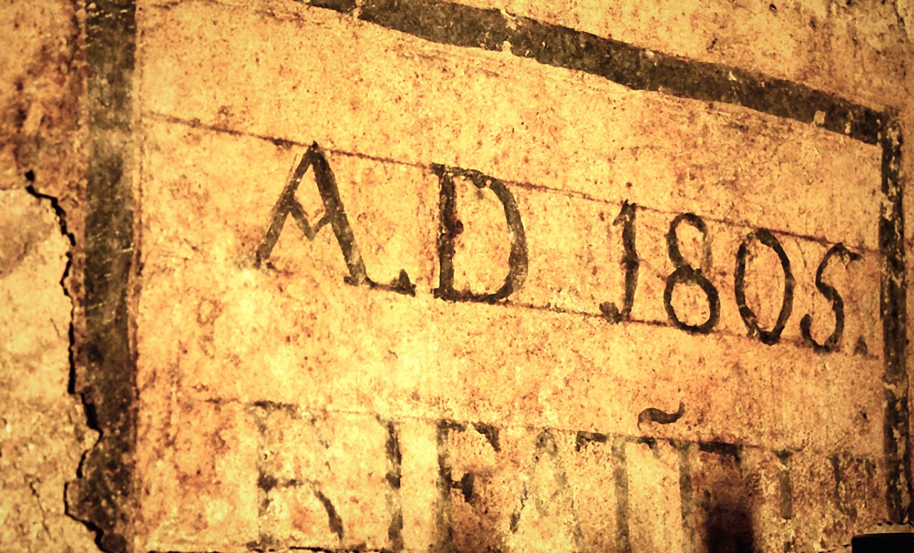

Lucca · Piazza San Salvatore · dal 1965
La più antica enoteca di Lucca
Scendi le scale di pietra: sotto la piazza ci sono cantine rifatte nel 1805 e migliaia di bottiglie da scoprire.


Dal 1965
Sessant'anni sotto lo stesso arco
Dal 1965 Vanni sceglie i vini, li conserva sotto terra e li consiglia a chi entra. La porta è sempre la stessa: quella sotto l'arco di pietra, con lo stemma sopra.
- 1965
- Apre l'enoteca in Piazza San Salvatore
- 1805
- L'anno scritto sul muro della cantina
- 60
- Anni festeggiati nel 2025
Ne hanno scritto Gambero Rosso, Tuscany Class, Il Mio Vino, Euposia e perfino una rivista giapponese. Leggi cosa dicono di noi.


La cantina
Sotto la piazza, la pietra
Volte di mattoni, lanterne di ferro, casse di legno impilate. Sul muro qualcuno ha dipinto "A.D. 1805, rifatto". Le bottiglie riposano qui, al fresco e al buio, come sempre.

Eventi
Degustazioni, corsi e serate
Da anni la cantina si apre per assaggiare, imparare e festeggiare. Siediti al tavolo di legno, il resto lo facciamo noi.
I sapori del vino
Una serata sui vignaioli indipendenti, con l'autore del libro.
50 anni di Enoteca Vanni
Mezzo secolo in Piazza San Salvatore.
Corso di degustazione
Come si assaggia un vino, in cantina.

La vita in enoteca
Si brinda sulla porta


Vieni a trovarci
Piazza San Salvatore, 7
Nel centro di Lucca, dentro le mura. Entra, chiedi un consiglio, scendi a vedere la cantina.
- Indirizzo
- Piazza San Salvatore 7, 55100 Lucca
- Telefono
- 0583 491902
- Orari
- Orari da confermare con Vanni